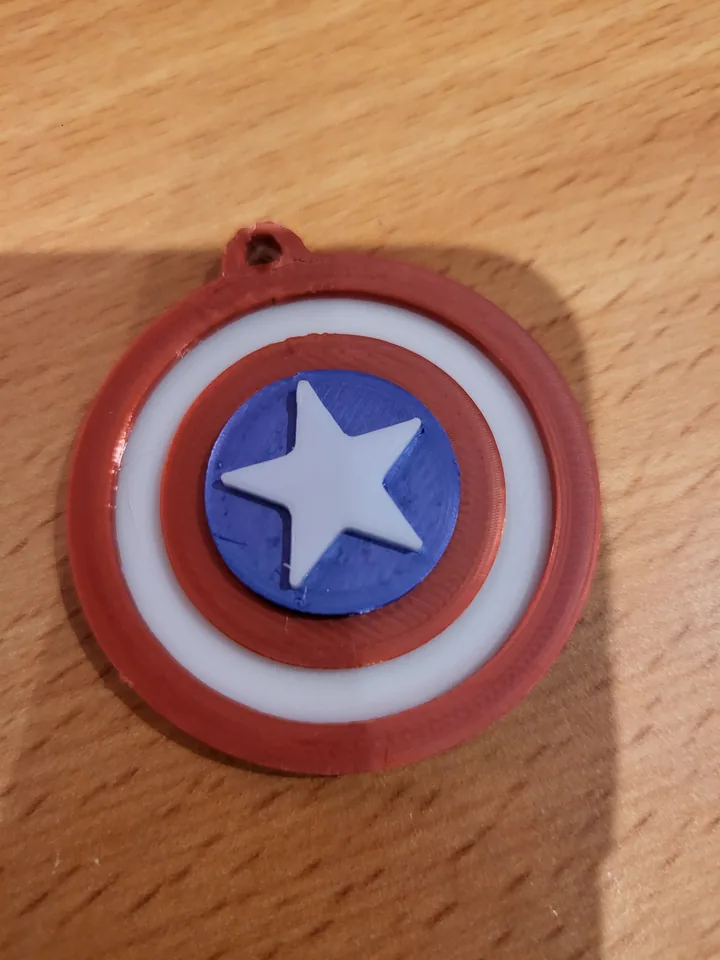
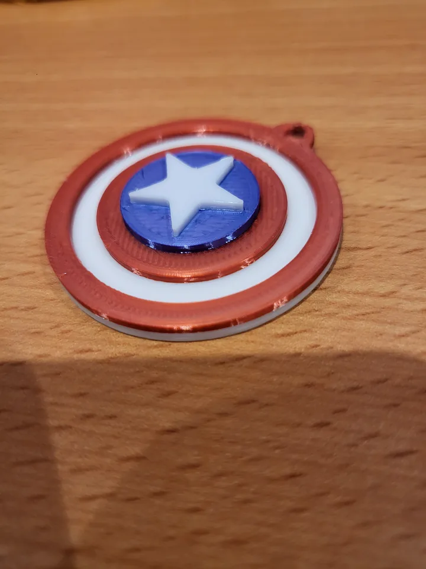
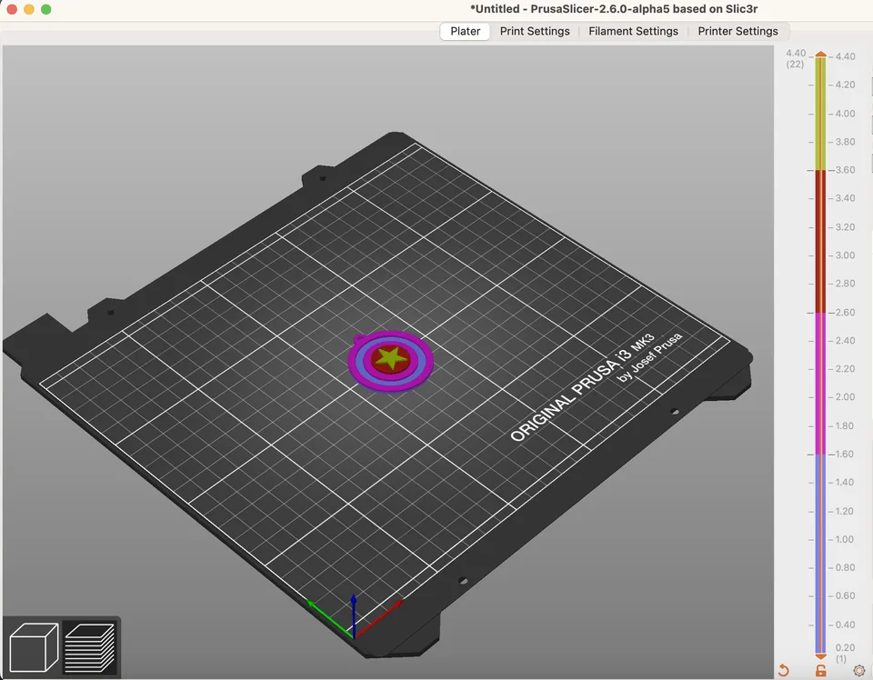
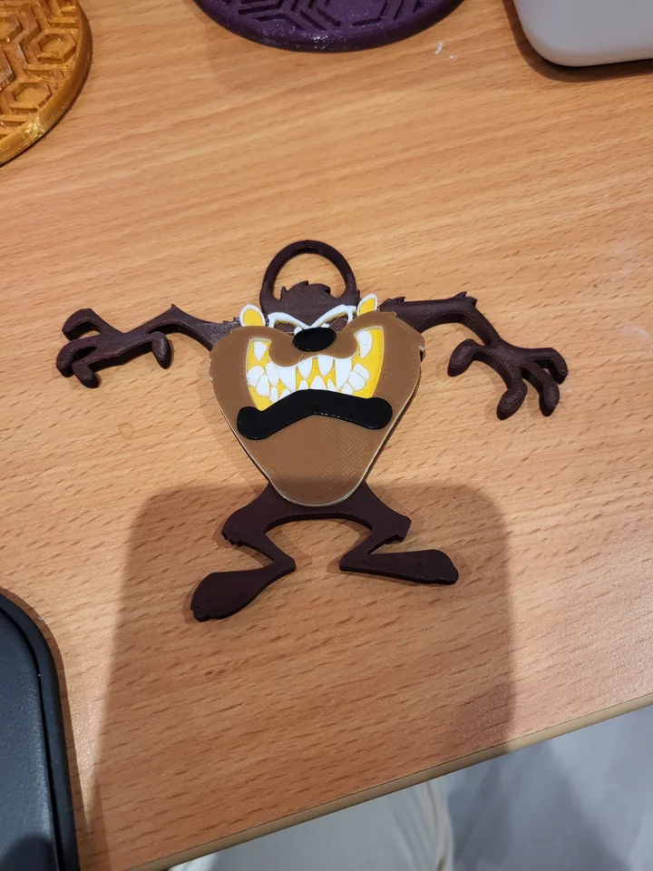

Colour changes via performing a filament change operation in your slicer
NOTE: This does NOT require an multi material device such as a Palette, MMU2S or ERCF.
Acquire a suitable print
A suitable print typically has a layer that you want in one colour and then at a certain height, the print changes so you want to perform a filament change e.g. to a new colour.
I have provided a Captain America shield STL in this github folder as a not so trivial example that has a number of colour changes.
It will require red, blue and white PLA.
I have provided images of the final Captain America key fob print as jpg files so you can see the correct colours to use.
As another example, I have also added a Tazmanian Devil (the cartoon character) key fob print to the repository as a jpg file.
I have also provided an example prusaslicer screenshot of the final multiple sliced STL based on the instructions below; the final preview in cura will look very similar if you have followed my instructions correctly.
SLICING
Prusa or super slicer
-
Import the STL file into your slicer and centre it on your print bed.
-
Slice the print.
-
Now, in prusa slicer it might offer you the opportunity to automatically perform the colour changes for you if it guesses it's a logo.
We are not going to do that for this example but knock yourself out if you want to try that; we are considering the more general case of filament colour changes, e.g. for a key fob in this particular case.
-
Move the vertical slider up so it rises to the first two rings of the Captain America shield and only just dismisses the base layer.
-
Click the plus sign on the side of the vertical slider.
-
Rinse and repeat this operation for the next circle and then finally for the top star.
-
Reslice the print.
-
Export the gcode to an SD card for your printer OR upload it to a raspberry pi or similar and you can print.
Cura
- Perform the same operations as above for Prusa slicer or super slicer; however, instead of just clicking a plus button, you need to insert the command: M600. Again rinse and repeat for all height filament colour changes. There may be a plugin for cura that simplifies this process but I no longer use cura regularly so I am not an expert on the matter.
PRINTING
-
Kick off the print
-
When the filament change operation occurs (I'm assuming marlin here, as I've never done it on klipper though I doubt it's very different, your printer may beep and ask you to press a button and remove/retract the current PLA filament. Do that.
-
Insert new filament. It will extrude and you may need to confirm the colour change is good on your printer menu. If you need to extrude more filament to ensure that the filament is the correct colour then do so. Nip off the filament ideally using some needle nosed pliers; hopefully your print head will have moved to the side of the bed and up a little to allow this operation. When you're happy, confirm this with a button press on your printer and I strongly suspect a little more filament will extrude (it does on my prusa) just before you restart printing. When this happens you need to be QUICK to nip that off with some needle nosed pliers or a suitable tool before it starts printing the next layer or it might smudge the print and make it look bad so be careful and quick about it.
-
Wait for the next layer to print, rinse and repeat this process until the print is done. Wait for bed to cool and then remove the print from the bed and you'll be golden.
-
Happy filament colour change printing!!!
Final Notes
-
When first checking a key chain or similar STL file for suitability to print, it's worth sometimes increasing the z height to gain a larger amount of extrusion on the top layer of the print. You can subsequently perform a cut operation to remove some of the base layer (be careful not to cut off critical print base parts). This can improve the quality of the print.
-
Another point to make is sometimes online STLs for key fobs have too small holes to fit on a standard keyring because the designer was an idiot and didn't consider what he was actually designing. In this scenario you have two choices; a) increase the x and y scale by the same amount but this means the print will be bigger or b) fiddle with it in a CAD program to you needs.
{kind=link}

{kind=link}

{kind=link}

{kind=link}
